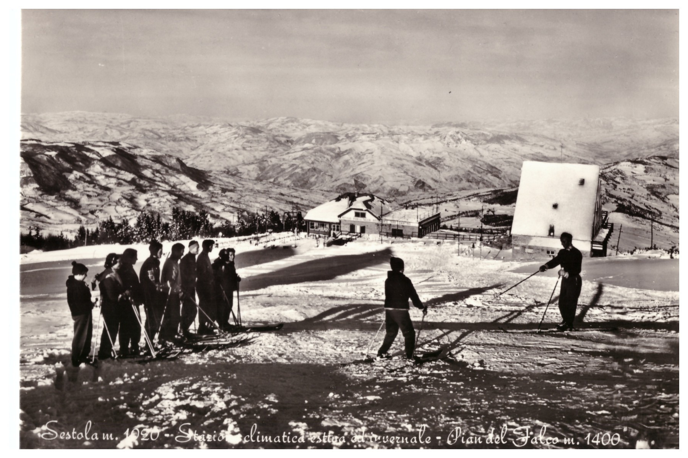

Scopri Pian del Falco
Pian del Falco con i suoi 1.350 metri di altitudine è la frazione più alta del capoluogo Sestola (Modena) e grazie alla sua posizione è chiamato “il balcone dell’Appennino modenese” per via della vista panoramica che offre sulla vallata. È la porta di accesso al Monte Cimone e alle località sciistiche del Lago della Ninfa e di Passo del Lupo, in una zona che offre numerose opportunità per gli amanti della natura, dello sport e del divertimento.
Grazie a questo sito potrai scoprire la storia di questa località montana, trovare informazioni riguardo le apportunità che offre sia d'estate che durante l'inverno e scoprire perchè è la meta ideale per chi ama la natura e il relax.
La storia di Pian del Falco
Un luogo cresciuto insieme alla vocazione turistica di Sestola e del Monte Cimone.
Leggi la storiaCosa fare a Pian del Falco
Natura, sport e divertimento in ogni stagione.
Scopri le attività e le proposte culturaliArchivio fotografico
Cartoline d’epoca e fotografie storiche di Pian del Falco e del Monte Cimone.
Visita l’archivioInformazioni riguardo questo sito
Una guida essenziale per conoscere meglio Pian del Falco.
Scopri il progetto